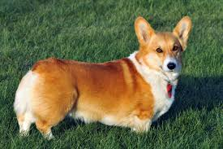

Corgis are ranked 11 among the most intelligent dog breeds. They are easy to train, very quick learners, and tend to know a ton of fun tricks! If you are someone who loves to teach your dog new things, corgis might be the perfect dog for you. On the downside, their intelligence makes them a little stubborn. Since they’re so smart, they love to test their humans to see what they can get away with, and sometimes only decide to listen when they know they’re going to be rewarded. My corgi Willo knows when I have a treat, and when I don’t! So if she knows she’s not going to be getting a treat for listening, she won’t do what I ask. On the plus side, she is very food-driven and is super eager to please when she knows there are treats involved! Consistency is key when it comes to training this smart breed. If you’re consistent in their training, they will be the best, and most well-behaved dogs.
Your Corgi will need a balanced diet rich in nutrients, vitamins, and minerals. It’s best to feed them complete dog food to ensure that they are getting the right amount of vitamins and nutrients.
Growing pups may prefer 3-4 smaller servings during the day, rather than two larger meals. This can be reduced to two meals a day as your dog gets older.
The Pembroke is the smaller of two breeds of Welsh Corgis -- the larger, less popular Cardigan is the other. Corgis are intelligent and courageous, as befitting a small dog developed to herd big livestock. Devoted to their families, they can be protective of them as well. Corgis are lively and entertaining, but they can be bossy if limits aren’t set and kept. They benefit from early socialization and manners training.
Pembroke Corgis are active dogs who don’t allow short legs to slow them down. They need regular exercise – and portion control --- to help with their tendency towards putting on weight. Keeping them fit is essential to help with the health risks posed by their long backs. Always on the alert, they also need early training to minimize barking.
The recommended portion size will depend on your individual dog. You’ll need to take into account their activity level, age and metabolism. To avoid weight gain, make sure your Corgi has a healthy and balanced diet and gets plenty of exercise
